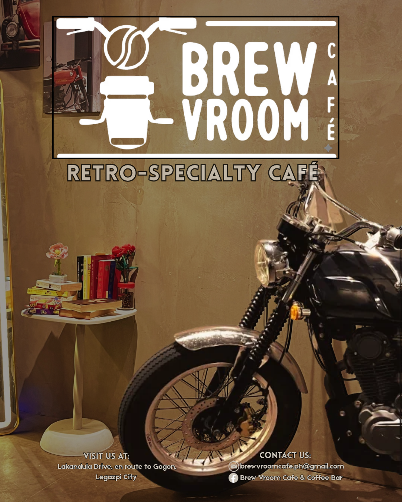
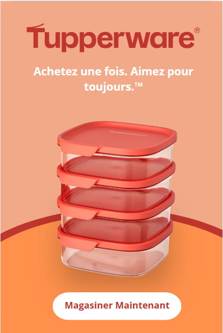

Brew Vroom Cafe Social Media Graphics
A collection of promotional graphics, social media carousel designs, and visual content created for a motorcycle-inspired café.
View all images → View on CanvaBSIT GRADUATE | Bicol University
I am a graphic designer and aspiring web developer with a passion for creating visually engaging digital experiences. I specialize in graphic design and website development, with a strong focus on UI design, clean layouts, and user-friendly web interfaces. I enjoy combining creativity and technology to build designs that are both aesthetically pleasing and functional.
A little about my background, interests, and where I'm headed.
I am a Bachelor of Science in Information Technology (BSIT) student at Bicol University. Throughout my academic journey, I have developed a strong foundation in programming, web development, database management, and system design. My education has allowed me to work on various academic and personal projects that strengthened my technical knowledge and practical skills.
I am an aspiring IT professional with an interest in front-end and full-stack web development, UI/UX design, and multimedia creation. I have experience developing web-based applications, designing user interfaces, and creating digital graphics through academic projects, freelance work, and internship experience.
During my internship at the Albay Provincial Agricultural Office, I worked as a front-end developer for Bitanim, a web-based agricultural information system. This experience helped me improve my collaboration, problem-solving, and development skills while working in a real-world environment.
I enjoy combining creativity and technology to develop functional, user-friendly, and visually engaging digital experiences.
My interests revolve around the intersection of technology, creativity, and problem-solving. I am particularly interested in:
I consider myself a creative, adaptable, and detail-oriented individual who enjoys learning and exploring new technologies. My experiences in academic projects, collaborative development, and freelance design have helped me develop the following strengths:
My goal is to become a skilled and well-rounded software developer who can build innovative, reliable, and user-centered applications. I aim to continuously strengthen my knowledge in front-end and back-end development while expanding my experience in software engineering and modern web technologies.
I also aspire to work with a team where I can contribute my creativity, technical skills, and willingness to learn while gaining valuable industry experience. In the long run, I hope to develop meaningful digital solutions that address real-world problems and create a positive impact.
My tech universe: hover over a planet to see the tool.
A selection of my designs. Click the button to view each one on Canva.

A collection of promotional graphics, social media carousel designs, and visual content created for a motorcycle-inspired café.
View all images → View on Canva
A collection of promotional banners and marketing graphics designed for an international Tupperware client, focusing on product presentation, visual appeal, and effective promotional communication.
View all images → View on CanvaA collection of self-initiated graphic designs, creative experiments, and personal visual projects inspired by my interests, hobbies, and passion for visual storytelling.
View all images → View on CanvaMy academic journey and the recognitions I've earned along the way.
Naga National High School
Completed the Science, Technology, Engineering, and Mathematics strand, developing foundational knowledge in science, mathematics, and technology.
Naga National High School
Completed secondary education and established a foundation for further academic development.
Nagas Elementary School
Completed primary education and developed foundational academic and personal skills.
AY 2025-2026 · 2nd Semester
AY 2025-2026 · 1st Semester
AY 2024-2025 · 2nd Semester
AY 2023-2024 · 2nd Semester
Internship, freelance work, and project-based experience.
Albay Provincial Agricultural Office (APAO)
Cabangan, Camalig, Albay, Philippines
Technologies: React.js, Vite, JavaScript, HTML, CSS, Git, GitHub, Figma.
Freelance / Independent
Graphic Design and Digital Content Creation
Tools: Adobe Photoshop, Canva.
Selected academic and personal projects
Tech: Laravel, PHP, MySQL, HTML, CSS, JavaScript
Tech: Java, NetBeans
Let's connect. I'd love to hear from you.